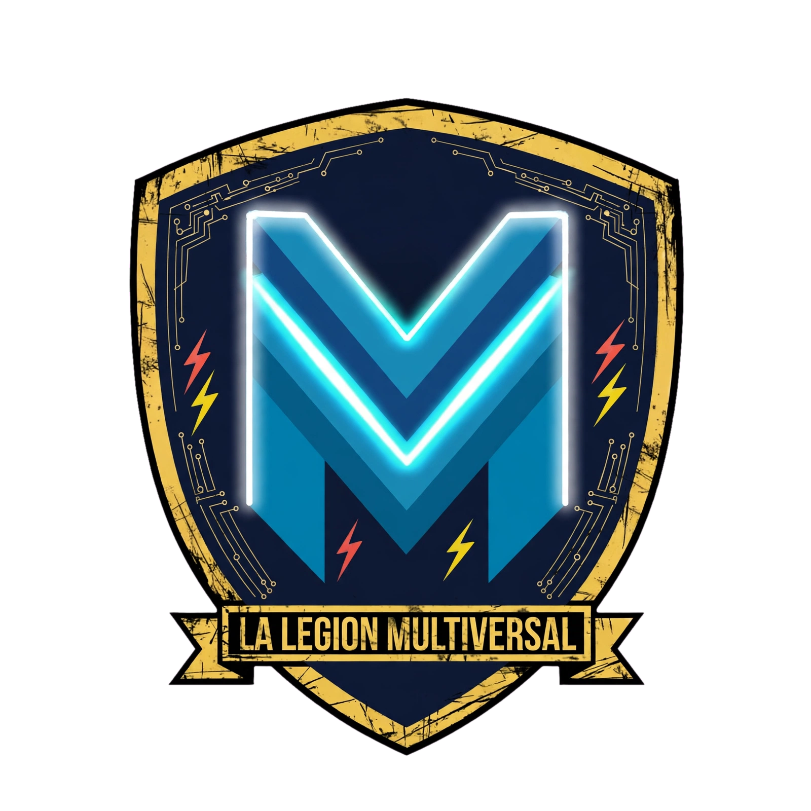

LA PRIMERA CHISPA
Demian y ROD3R1K cruzan caminos en Marvel Rivals. Akuma se suma y nace el primer núcleo de esta aventura.

DIFERENTES MUNDOS. UNA MISMA LEGIÓN.
ARCHIVO CENTRAL · LEGIÓN MULTIVERSAL
No nacimos como una gran organización. Nacimos jugando, compartiendo directos y descubriendo que, cuando las personas correctas se encuentran, pueden construir algo mucho más grande que una colaboración.

Una primera formación. Una idea compartida. El punto de partida de todo lo que vino después.
Todo comenzó con Demian y ROD3R1K, compartiendo partidas de Marvel Rivals y una idea que todavía no tenía nombre: reunir a creadores con personalidades distintas para hacer algo juntos. Akuma se sumó a aquellas primeras misiones y el equipo empezó a tomar forma.
Después llegó Fortnite. Lo que parecía una serie de encuentros entre amigos empezó a convertirse en una comunidad: se incorporaron ElGabii y Capy, y cada nueva persona amplió el universo que estábamos construyendo.
En ese momento entendimos que no queríamos limitarnos a jugar juntos. Queríamos conectar comunidades, potenciar proyectos y abrir un espacio donde cada integrante pudiera crecer sin dejar de ser quien es.
Cada incorporación abrió una puerta nueva. No reemplazamos lo que éramos: lo hicimos crecer.
Demian y ROD3R1K cruzan caminos en Marvel Rivals. Akuma se suma y nace el primer núcleo de esta aventura.
Fortnite se convierte en otro punto de encuentro. Con ElGabii y Capy, la colaboración empieza a tomar forma de comunidad.
La idea deja de ser solamente compartir partidas: queremos unir creadores, impulsar sus proyectos y generar oportunidades entre comunidades.
Se incorporan colaboradores como Pato — Oratoris y Hábitos Atómicos. La tecnología, la comunicación, la filosofía y el desarrollo personal también encuentran su lugar.
Lady Moriarty se convierte en la primera mujer en sumarse a esta historia y aporta una nueva energía al equipo, además de compartir el universo de Los Moriartys.
Llega Dave como estudiante, con su propio espacio y un camino por descubrir. La Legión sigue abierta a nuevas personas, talentos y universos.
03 / CAMBIO DE ERA
S3X-MEN FUE NUESTRO ORIGEN.
Somos una comunidad internacional de creadores que conecta gaming y entretenimiento, conocimiento y tecnología, y desarrollo personal. Queremos cruzar fronteras, culturas y disciplinas; compartir audiencias, aprender unos de otros y crear oportunidades que individualmente serían más difíciles de alcanzar.
No buscamos que todos hagan lo mismo. Buscamos que cada persona aporte algo propio.
DIFERENTES MUNDOS. UNA MISMA LEGIÓN.El talento no tiene una sola forma. Conectamos entretenimiento, conocimiento y crecimiento personal para construir una comunidad donde cada persona pueda aportar desde su especialidad.
Videojuegos, streaming, eventos, experiencias cooperativas y creación de contenido para compartir momentos memorables.
Programación, herramientas digitales, innovación, aprendizaje y experiencias que ayudan a ampliar nuestras capacidades.
Filosofía, motivación, hábitos, reflexión y conversaciones que también nos hacen crecer fuera de la pantalla.
UNA IDENTIDAD ABIERTA: cada integrante puede conectar con más de una dimensión. No son compartimentos cerrados, sino distintas formas de sumar al equipo.
05 / LOS PROTAGONISTAS
Los expedientes visuales de cada integrante están reunidos en el Capítulo 02. Allí vas a encontrar a cada héroe una sola vez, presentado dentro de su marco oficial y con acceso a su ficha completa.
Seleccioná el retrato de un integrante para conocer su carta oficial y abrir su bitácora individual.
Legión Multiversal es un instituto creativo y una comunidad de creadores que encuentra en los videojuegos, el entretenimiento y la comunicación un punto de encuentro. Cada integrante conserva su voz, su estilo y su propio universo; la Legión aparece cuando esas identidades se conectan alrededor de una visión compartida.
Entendemos el Instituto como un espacio de encuentro, aprendizaje y colaboración: un lugar para desarrollar ideas, probar formatos, compartir experiencias y crecer sin perder aquello que hace único a cada creador.
Crear contenido es mucho más que estar en directo o publicar una pieza. Es encontrar una voz, generar experiencias y construir una relación honesta con quienes nos acompañan. Apostamos por propuestas con personalidad, criterio y libertad creativa.
Nuestra identidad colectiva no borra las diferencias: las reúne. Cada integrante aporta su mirada, sus conocimientos, su humor, sus intereses y su manera de conectar. La diversidad de perfiles es parte de nuestra fuerza.
La colaboración empieza por escuchar, respetar los tiempos y reconocer el trabajo de los demás. Buscamos un entorno donde se pueda participar, proponer, equivocarse, aprender y disentir con respeto.
Crecer no significa competir entre nosotros. Significa abrir oportunidades, compartir herramientas y experiencia, impulsar proyectos conjuntos y celebrar los avances individuales y colectivos.
Las métricas ayudan a entender el alcance, pero no definen por sí solas el valor de una comunidad. Nos importa ofrecer conversaciones, entretenimiento y espacios participativos donde las personas se sientan bienvenidas.
Queremos experimentar y sorprender, manteniendo la transparencia con la audiencia y con quienes confían en nuestros proyectos. La autenticidad, el cumplimiento de los acuerdos y la comunicación clara forman parte de nuestro trabajo.
A nuestra comunidad queremos ofrecerle entretenimiento compartido, cercanía, participación y un entorno respetuoso donde descubrir nuevos juegos, ideas y creadores. A las marcas, estudios y publishers queremos acercarles un equipo con identidades complementarias, capacidad de generar contenido en distintos formatos y disposición para construir acciones coherentes con cada proyecto.
No buscamos colaboraciones vacías ni mensajes que no representen a quienes somos. Nos interesa trabajar con propuestas que tengan sentido para ambas partes, respeten a la audiencia y permitan crear una experiencia genuina.
Reunimos creadores con propuestas propias y una identidad compartida. Este panel ofrece una fotografía de la actividad reciente de los canales Twitch que integran el roster, con datos observados y fecha de actualización.
La información se obtiene de Twitch Helix mediante data.json. El sistema consulta los canales de forma programada cada 15 minutos y conserva una ventana móvil de hasta 30 días. La frecuencia es programada: no representa una detección instantánea ni garantiza que cada cambio de estado se registre en el momento exacto. La ventana máxima configurada no significa que los 30 días estén completos: la cobertura efectiva depende de la antigüedad y continuidad de la recolección.
Los espectadores actuales y el estado en directo corresponden a la última consulta disponible. Los promedios, picos, horas en directo y horas vistas se calculan a partir de las muestras propias y no sustituyen las métricas oficiales de Twitch Creator Dashboard. Las horas vistas son estimaciones derivadas del muestreo; los intervalos sin observaciones no se reconstruyen.
Los totales de seguidores y las analíticas históricas oficiales solo se publican cuando la fuente y los permisos permiten verificarlos. No se completan valores faltantes mediante estimaciones.
| Canal | Estado | Espectadores actuales | Categoría | Promedio observado | Pico observado | Horas observadas | Muestras |
|---|---|---|---|---|---|---|---|
| Cargando estadísticas… | |||||||
Una selección para reunir al roster y a la comunidad alrededor de experiencias distintas: juegos de fiesta, engaño social, escondidas, terror cooperativo, supervivencia y mundos para construir juntos. No todos son cooperativos tradicionales; elegimos cada título por lo que puede generar cuando lo compartimos en directo.
Nuestro criterio: priorizamos la diversión en grupo, las situaciones inesperadas, la participación y el potencial de crear momentos memorables. Antes de organizar una sesión, revisá la tienda oficial para confirmar edición, requisitos y compatibilidad entre plataformas.

Escuchá un sonido y reproducilo con tu voz: todos imitan al mismo tiempo y la ronda se convierte en una competencia de ocurrencias, imitaciones y sabotajes. Ideal para que el chat también se divierta con las reacciones.
Jugadores: 1–5 online.
Ver en Steam ↗
Pintate para copiar los colores del escenario, encontrá el escondite perfecto y tratá de pasar desapercibido. Una propuesta visual, rápida y muy divertida para jugar con amigos y generar momentos absurdos en directo.
Plataforma: PC · Steam.
Ver en Steam ↗
Entren juntos en espacios inquietantes, resuelvan obstáculos y busquen la salida mientras algo los persigue. El chat de proximidad y los sustos compartidos pueden convertir cada expedición en una historia distinta.
Jugadores: 1–6 en cooperativo online.
Ver en Steam ↗
Recuperen objetos valiosos en escenarios llenos de criaturas. La física obliga a coordinar cada movimiento, pero cualquier traslado puede terminar en un desastre hilarante.
Jugadores: hasta 6 online.
Ver en Steam ↗
Entren a filmar criaturas y situaciones aterradoras para conseguir visualizaciones. La misión es volver con el material grabado; lo que pase durante la expedición suele ser lo mejor del episodio.
Jugadores: hasta 4 online.
Ver en Steam ↗
En una oficina, algunos cumplen tareas y otros se hacen pasar por empleados productivos. El gerente debe descubrir quién está trabajando y quién está fingiendo. Perfecto para acusaciones, alianzas y actuaciones sospechosas.
Modo: multijugador online de deducción social.
Ver en Steam ↗
Una cuadrilla explora lunas abandonadas para recolectar chatarra y cumplir la cuota de la Compañía. Comunicación, nervios y decisiones desesperadas: una combinación ideal para sustos y clips.
Modo: cooperativo online · PC/Steam.
Ver en Steam ↗
Un mundo compartido para construir, explorar, sobrevivir y desarrollar proyectos con la comunidad. Puede convertirse en una aventura continua de la Legión, con objetivos y eventos propios.
Ediciones: Java y Bedrock tienen compatibilidades distintas; Bedrock permite juego cruzado entre plataformas compatibles.
Tienda oficial de Minecraft ↗
Trabajen juntos para completar tareas mientras intentan descubrir a los impostores. Reuniones, coartadas, traiciones y acusaciones hacen que cada partida dependa de la personalidad del grupo.
Jugadores: 4–15 en partidas locales u online.
Ver en Steam ↗
Tras un accidente aéreo, hay que explorar un bosque hostil, levantar refugios, conseguir recursos y sobrevivir a sus habitantes. Una campaña para compartir exploración, tensión y decisiones en equipo.
Modo: supervivencia con multijugador cooperativo.
Ver en Steam ↗Las fichas enlazan a la tienda oficial de cada juego. Antes de convocar al roster, confirmá que todos tengan la misma edición o una versión compatible. En Minecraft, distinguí Java de Bedrock; en los títulos de Steam, revisá los requisitos y el modo online de la ficha vigente.
Cuando uno o más integrantes estén transmitiendo, vas a poder elegir un canal y verlo directamente desde esta página. La disponibilidad se actualiza a partir de las consultas programadas del sistema.
Consultando el estado de los canales…
El reproductor oficial de Twitch requiere conexión a internet y un navegador compatible. En GitHub Pages se utiliza el dominio publicado como parámetro de inserción; si abrís una copia local, Twitch puede bloquear la reproducción.
Legión Multiversal reúne creadores de gaming, entretenimiento, tecnología y desarrollo personal. Diseñamos colaboraciones que respetan la identidad de cada canal y buscan una conexión genuina con la audiencia.
Presentaciones de juegos, primeras impresiones, sesiones especiales, cobertura de lanzamientos y experiencias en vivo.
Sesiones grupales, desafíos, eventos con varios creadores y formatos que muestran la interacción real del equipo.
Momentos destacados, piezas breves y publicaciones complementarias para extender la conversación más allá del directo.
Dinámicas participativas, sorteos cuando estén autorizados, encuentros y experiencias alineadas con cada campaña.
Los integrantes cuentan con experiencia en transmisiones, campañas de videojuegos, solicitudes de acceso y programas para creadores. Las colaboraciones y acreditaciones se comunican de forma individual y únicamente cuando pueden respaldarse.
Transparencia: las colaboraciones, acreditaciones y campañas se incorporarán a esta presentación cuando cada una cuente con respaldo verificable —por ejemplo, una página oficial, una comunicación del publisher o un registro fechado—. Una solicitud de acceso, una clave recibida o la participación en una plataforma de campañas no se presentarán como una alianza oficial.
Desarrolladores, publishers, agencias y marcas pueden acercar propuestas de campañas, patrocinios, cobertura, accesos anticipados o acciones con la comunidad.
Para evaluar una propuesta, compartí la marca o juego, objetivos, fechas, plataformas, entregables esperados y presupuesto disponible.
La Legión conecta personas, canales y proyectos distintos. Compartimos partidas, conversaciones, ideas y oportunidades para que cada integrante pueda crecer con su propia identidad.
Descubrí los canales del roster, acompañá sus directos y conocé las distintas propuestas que conviven en la Legión.
Sumate a las conversaciones, sugerí juegos y proponé actividades grupales a través de nuestros canales públicos.
Creemos en la colaboración genuina, el respeto entre creadores y el intercambio de conocimientos y audiencias.
La actividad de cada integrante se publica en su propio canal. Los horarios y las agendas se anuncian cuando cada directo o encuentro está confirmado.